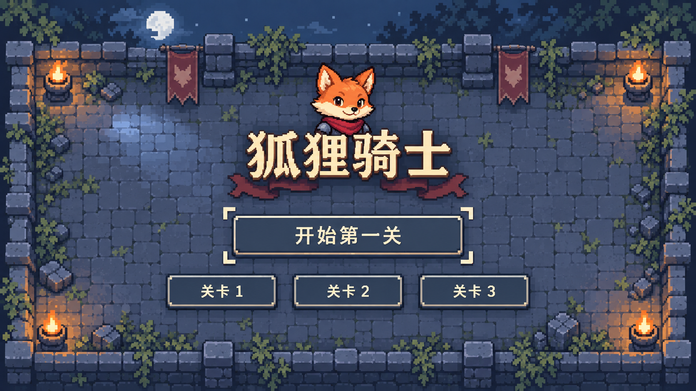
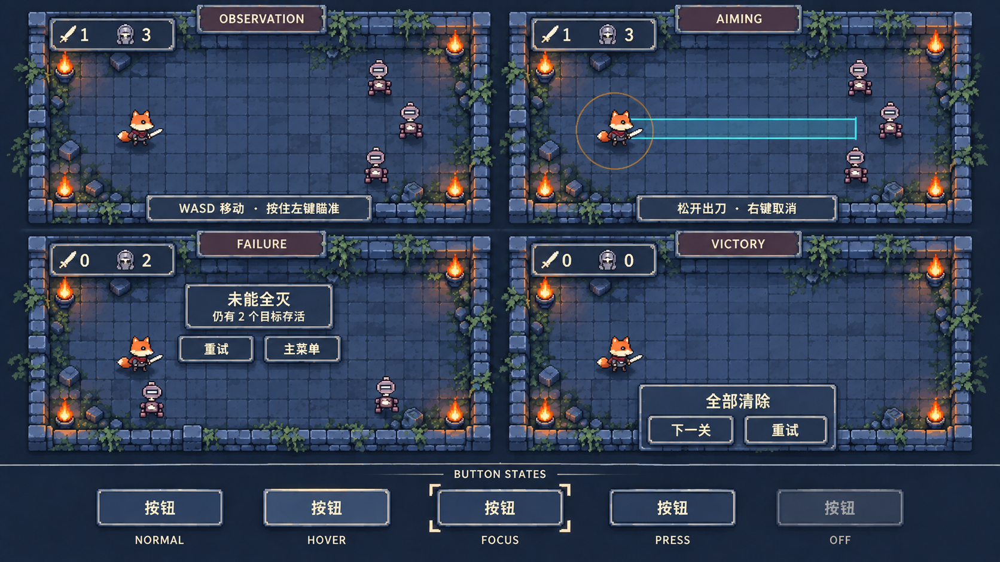

2026-09-29：R3其余方向已认可；本轮补充 弧形斩／冲撞斩瞄准像素交互样张，待审后再正式制作。
狐狸骑士 · UI R3
减轻钢铁与黑暗质感 · 简化按钮 · 统一E狐狸头像 · 明确像素色块
本轮仅UI设计修订，其余已认可方向保留。完整修订及原生像素规格
主菜单

灰蓝哑光底、米白字、少量酒红；删除钢角、铆钉与重复花饰。头像改用E的圆颊短吻与围巾，不再套盾徽。
HUD、提示、结果与按钮状态

共享细边与三阶表面。焦点靠小角标，按下态应下移一个原生像素并压暗；当前生成稿对此仍不够明确。
图片为设计概念，不是已验证的原生像素资源或游戏截图。英文是审图标签；旧狐狸仅为位置占位。菜单新增远景仅属菜单候选，不改变已认可关卡。生成残余渐变和边角细节在原生样张中去除。
待确认的是UI现在的轻重、细节程度及与狐狸的整体关系。未改游戏，未开始正式接入。
R3说明 · E狐狸与上一轮记录